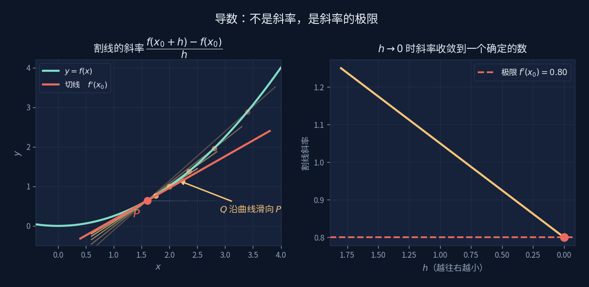
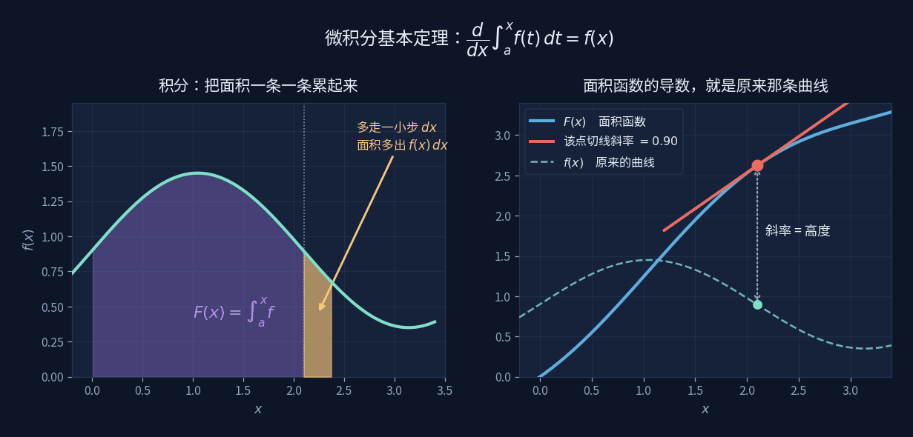

变化与梯度
Change & Gradients
导数是斜率的极限，微分是最好的那条直线，积分是把变化累回去。
三件事其实是一件事的三个方向。
先把三个词分清
导数、微分、积分，中学里常被当成三套计算规则背下来。 但它们各自回答一个很具体的问题：
导数：此刻变化多快？ → 一个数，切线的斜率
微分：往前挪一点点，大约变多少？→ 一个近似，$dy=f'(x)\,dx$
积分：把这些变化累起来是多少？ → 一段面积
它们的关系是：导数把函数拆成瞬时变化率，积分把瞬时变化率装回去， 微分是中间那座桥——它把"变化率"翻译成"实际变了多少"。
导数：不是斜率，是斜率的极限

取曲线上一点 $P$，再取旁边一点 $Q$，两点连线的斜率好算—— 这是割线，是初中就会的东西。
问题在于"此刻的斜率"。$Q$ 和 $P$ 重合时，$\frac{0}{0}$ 没有意义。 所以导数不直接问那个值，而是问：让 $Q$ 一路滑向 $P$，割线斜率会不会趋向某个确定的数？
右图就是这个极限过程：横轴是 $h$，越往右越小，纵轴是对应的割线斜率。 $h$ 还没到零，斜率已经在往 $0.80$ 收拢了。导数是这个"要去哪儿"，不是"到了哪儿"。
微分：最好的那条直线
知道了斜率，就能拿它做近似。在 $x_0$ 附近，用切线代替曲线：
演示里那个红色小台阶画的就是这件事——横着走 $dx$，竖着升 $dy$。 把 $dx$ 拖大，你会看到台阶顶端离曲线越来越远；拖小，两者贴合。
为什么值得单独起个名
因为几乎所有的实际计算都在用它。误差传递、牛顿法、优化的每一步、 神经网络反向传播里的每一次更新——都是"在当前点，用直线代替曲线，走一小步"。 微分是把非线性问题临时当成线性来处理的通行证。
积分与基本定理

积分是把无数个"$f(x)\cdot dx$"加起来。演示里那些紫色柱体就是这些小块， 把分割数 $n$ 调大，柱体越来越细，总和越来越接近曲线下的真实面积。
关键的一步在右图。把"从 $a$ 到 $x$ 的面积"看成一个新函数 $F(x)$， 问它的导数是多少——$x$ 往前挪一点点 $dx$，面积就多出细细的一条， 高是 $f(x)$、宽是 $dx$。所以
这就是微积分基本定理：面积函数的导数，就是原来那条曲线。 积分和求导是互逆的两个动作——这句话让"算面积"这件难事， 变成了"找一个导数等于 $f$ 的函数"这件相对容易的事。
四个概念
极限 Limit
- 是什么
- 不问"到了哪儿"，问"要去哪儿"。
- 为什么必须有
- 因为"此刻的速度"本身是个悖论：任何一个瞬间，物体都没有移动。 极限绕开了这个悖论——不看那一点，看逼近那一点的过程。
- 结构位置
- 导数、积分、连续、级数，整个微积分都架在它上面。
- 不存在意味着
- 函数在那一点不可导。比如尖角处，左右两边的割线斜率趋向不同的数。
导数 Derivative
- 是什么
- $f'(x)$，割线斜率在 $h\to0$ 时的极限。
- 在量什么
- 变化的快慢。位置的导数是速度，速度的导数是加速度。
- 结构位置
- 多元函数里，每个方向都有一个导数，它们打包成梯度。 梯度指向上升最快的方向，所以"沿负梯度走"就是下山——这是所有优化算法的起点。
- 为零意味着
- 切线水平：极大、极小或拐点。最小二乘就是靠"令导数为零"解出来的。
链式法则 Chain Rule
- 是什么
- $\dfrac{dz}{dx}=\dfrac{dz}{dy}\cdot\dfrac{dy}{dx}$，一层套一层时导数相乘。
- 在量什么
- 影响是怎么传下去的。$x$ 动一点，$y$ 跟着动，$z$ 再跟着动—— 总影响就是每一层放大倍数的乘积。
- 结构位置
- 它是反向传播的全部内容。神经网络几十层， 求某个权重对最终误差的影响，就是把这条链从后往前乘一遍。
- 某一环为零意味着
- 整条链断掉，梯度传不回去——这就是深层网络里的"梯度消失"。
积分 Integral
- 是什么
- $\int_a^b f(x)\,dx$，把无数个 $f\cdot dx$ 累加起来的极限。
- 在量什么
- 累积量。速度积出路程，功率积出能量，概率密度积出概率。
- 结构位置
- 与求导互逆（微积分基本定理）。多重积分算体积， 曲面积分算通量——向量板块里那个电通量 $\Phi=\mathbf E\cdot\mathbf A$，正是曲面积分在均匀场下的简化。
- 算不出解析式意味着
- 绝大多数积分都没有初等原函数。这时就用数值积分—— 本质上就是演示里那些柱体，只是分得更细、加权更聪明。
延伸：卷积——积分在工程里的样子
上面那个积分是"把 $f(x)\,dx$ 累起来"。把被累加的东西换一换， 就得到工程里用得最多的一种积分：
卷积 convolution
它在说一件很朴素的事
敲一记，系统会响一阵子——这段回响叫冲击响应 $h(t)$。
任何输入都可以看成无数记轻重不同的敲，每一记都引出一段自己的回响，
彼此错开时间叠在一起。把这些回响加起来，就是卷积。
积分号在这里干的活，正是"把无穷多份叠加起来"。
音箱的混响、镜头的虚化、通信里的多径衰落，背后都是同一个式子。 下面这个探器把它拆成七块：一记尽量尖的脉冲进去，看信道怎么把它撕成几记、 再揉圆成"草垛"，以及能不能用一个逆函数把草垛扳回原来的针。
三件容易记反的事，写在这儿：冲击函数是探针，不是草垛； 谁先响看第②块的左右，不看第⑤块的相角； 修复成功不代表信道变了——变的只是你又乘了一个 $G$。
请输入友情码
Enter the friendship code
线索：首页那句话是谁说的？填他的姓，拼音或英文都行。
Hint: who said the line on the homepage? His surname will do.
不对，再想想 Not quite — try again
在别的板块里，它长这样
S 曲线：六个条件里有四个是导数条件
开机平滑那条 $s(t)=6t^5-15t^4+10t^3$，六个边界条件中
$s'(0)=s'(1)=0$ 管的是起停速度、$s''(0)=s''(1)=0$ 管的是起停加速度。
没有导数这个概念，"平顺"就只是一种感觉，写不成方程。
见 → 实战 · 开机那一下
最小二乘：令导数为零
残差平方和 $S(\mathbf c)=\lVert A\mathbf c-\mathbf b\rVert^2$ 是个开口向上的碗，
碗底就是最优解。找碗底的办法正是"对每个系数求偏导、令其为零"——
这是推出正规方程的三条路之一。
见 → 拟合与最小二乘
神经网络：链式法则跑几万遍
舵机标定那组数据，小网络跑三万轮梯度下降才追平最小二乘一步解出的结果。
每一轮的核心动作，都是用链式法则把误差的责任分摊回每个权重。
见 → 神经网络